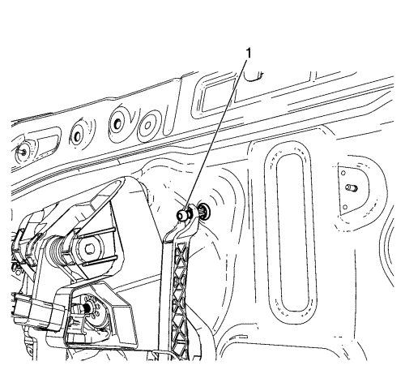
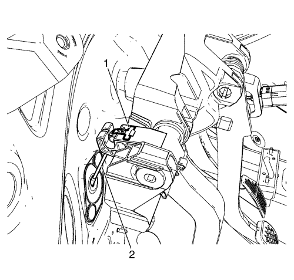
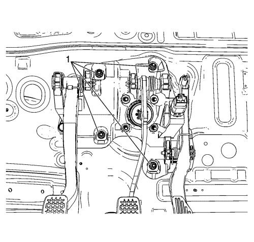

Desenchufe el conector eléctrico del interruptor de las luces de freno (1).

Desconecte el cable del acelerador, del pedal del acelerador, tirando y levantando el extremo del cable (1).

Levante el muelle de fijación del extremo del cable (1), y desconecte el cable del embrague (2), del pedal del embrague, si procede. Consultar Sustitución del cable del embrague .
Desmonte el clip de sujeción (1) y el pasador (2), del pedal de freno.
Suelte la varilla de empuje del servofreno, del pedal de freno.
Desmonte las tuercas de fijación del servofreno al del módulo de pedales de acelerador, freno y embrague (ABC) (1), del módulo de pedales de ABC.

Desmonte las tuercas de fijación del módulo de pedales de ABC al panel del salpicadero (1), del módulo de pedales de ABC.
Desmonte el módulo de pedales de ABC, del vehículo.
Si fuera necesario, desmonte el pedal del acelerador, del módulo de pedales de ABC.